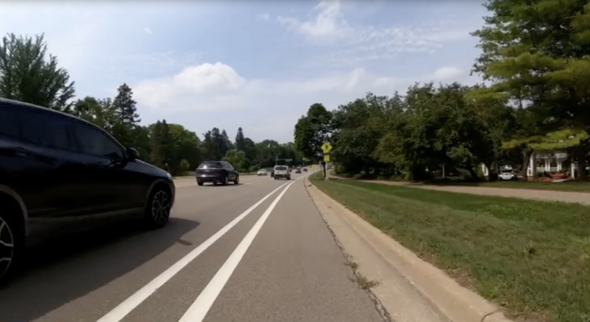
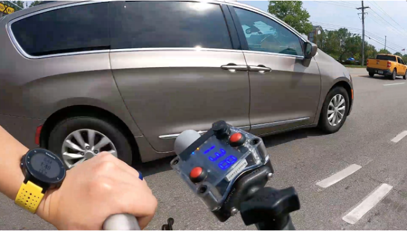

Quantifying drivers-overtaking-bicyclists with surrogate safety measures from a high-resolution 3D lidar
January 14, 2026


Preliminary data collection
- Two bicycle rides in Ann Arbor, MI
- 4-lane arterial road with 35 mph speed limit
- A painted bike lane on each side
- Bicycle riding speed: 12-15 mph
- Bicycle riding in the middle of the bike lane
- 306 vehicle overtaking events




Segmented overtaking vehicles with their 3D bounding boxes
Passing phase definition


Results
- 306 overtaking events from two trips
- Passing distance validation over a sample of 98 events
- MAE: 3.9 cm
- MAPE: 2.5%



Acknowledgements
This material is based upon work supported by the National Science Foundation under Award Number 2142757.
“CAREER: Improving Bicycling Safety by Developing a Research Framework for Studying Driver-Bicyclist Interactions”